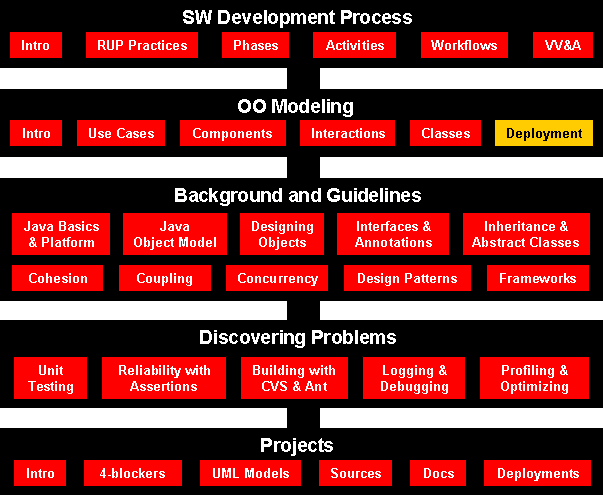
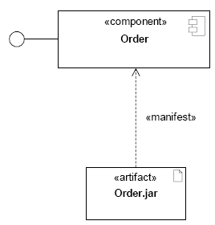
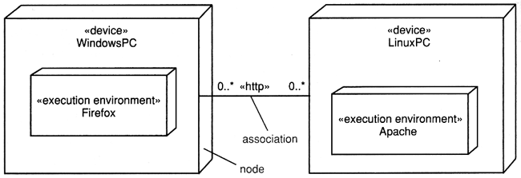
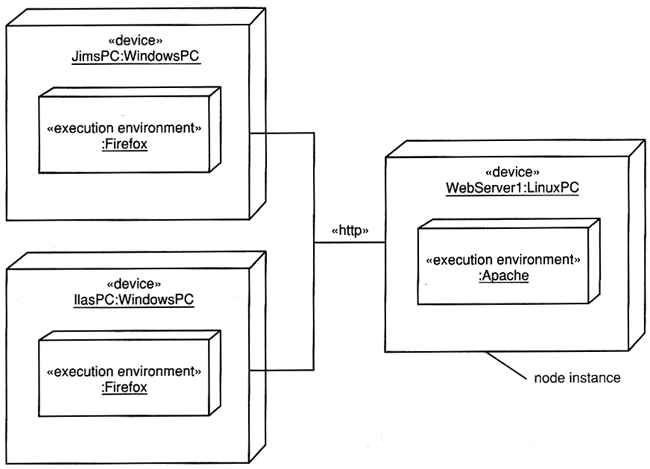
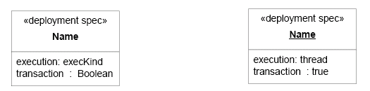
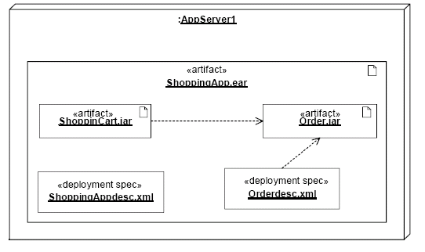
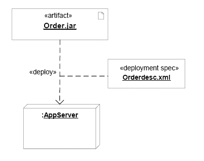
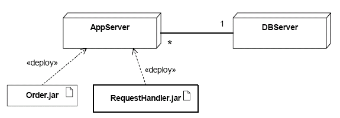
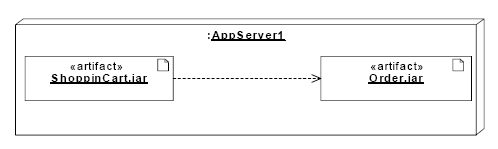

Software Engineering
Deployment Diagrams
Course Map

Agenda
Definitions
- An artifact is the specification of a physical piece of
information that is used or produced by a software development process,
or by deployment and operation of a system. Examples of artifacts
include model files, source files, scripts, and binary
executable files, a table in a database system, a development
deliverable, or a word-processing document, a mail message.
An Artifact defined by the user represents a concrete element in the physical
world. A particular instance (or ‘copy’) of
an artifact is deployed to a node instance. Artifacts may have composition
associations to other artifacts that are nested
within it. For instance, a deployment descriptor artifact for a component may be
contained within the artifact that
implements that component. In that way, the component and its descriptor are
deployed to a node instance as one artifact
instance.
- A deployment (instalacja) is the allocation of an artifact or artifact
instance to a deployment target.
- A component deployment is the deployment of one or more artifacts
or artifact instances to a deployment target,
optionally parameterized by a deployment specification. Examples are executables
and configuration files.
- Deployment diagrams show the
allocation of Artifacts to Nodes according to the Deployments defined between
them.
- A deployment specification is a general mechanism to parameterize
a Deployment relationship, as is common in various
hardware and software technologies. The deployment specification element is
expected to be extended in specific
component profiles. Non-normative examples of the standard stereotypes that a
profile might add to deployment
specification are, for example, «concurrencyMode» with tagged values {thread,
process, none}, or «transactionMode»
with tagged values {transaction, nestedTransaction, none}.
- A node is computational resource upon which artifacts
may be deployed for execution.
Nodes can be interconnected through communication paths to define network
structures.
- A device is a physical computational resource
with
processing capability upon which artifacts may be deployed for
execution. Devices may be complex (i.e., they may consist of other devices).
Artifacts
An artifact represents the specification of a real world thing
such as a file.

A visual representation of the manifestation relationship between artifacts
and components
Nodes
- A node represents a type of computational resource.
- A node instance represents a specific computation resource.

A descriptor form deployment diagram.

The instance for deployemt diagram.
Deployment specifications

Deployment Specification for an artifact (specification and instance levels)

Deployment Specifications related to the artifacts that they parameterize
Deploy relationships

A Deployment Specification for an artifact
The following deployment diagram shows the relationships among software and
hardware components involved in a data base application.

Communication path between two Node types with deployed Artifacts
- Artifacts may be contained within node instance symbols.
- This indicates that
the items are deployed on the node
instances.

A set of deployed component artifacts on a Node